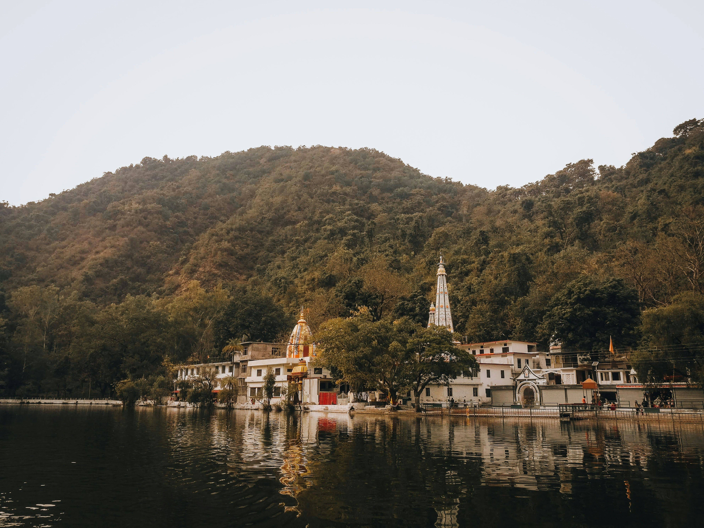

TRAVEL / LANDSCAPE / CULTURE
The world, one frame at a time.
Take a short visual trip through mountain paths, old streets, quiet shores and places shaped by people and nature.
THE GALLERY
Places worth pausing for
Use the arrows or choose a marker.
ABOUT THIS PROJECT
A small library, built from the basics.
Fieldnotes is a responsive image slider made with HTML, CSS and JavaScript. It uses a horizontal track, clickable dots, and cloned boundary slides to create a continuous gallery without a third-party carousel library.